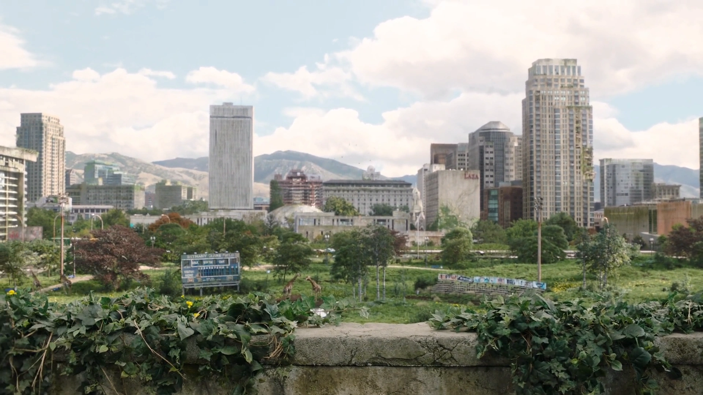

содержание
Локации
Локации

На этой странице предоставлен список городов, в которых Джоэл и Элли побывали в
течении игры, и их краткое описание.
Остин — столица штата Техас. В начале игры здесь происходит вспышка кордицепсной церебральной инфекции, как и во многих других городах и странах мира. Здесь начинается история Джоэла и Сары. Как только в городе начинается хаос, они вместе с братом Джоэла Томми пытаются выбраться за пределы города. Там же погибает Сара.
Бостон представляет из себя военизированную карантинную зону. Часть города находится за высокой стеной (кордоном), которая постоянно патрулируется. Жители живут под контролем военных. Они снабжают выживших продовольствием и обеспечивают их защиту. Однако Бостон полон контрабандистов, преступников и «Цикад»: здесь развивается продажа нелегального оружия, боеприпасов. Будучи раненой, Марлин — королева «Цикад» — просит Джоэла и Тесс провести Элли за пределы зоны, к Капитолию города. Большая часть города вне стен представляет из себя разрушенные бомбардировками и временем здания и постройки. Природа возвращает себе опустевшие части города: многие улицы затоплены, покинутые места кишат заражёнными. Во время пути к Капитолию контрабандисты выясняют, что у Элли иммунитет к КЦИ, что изначально героям кажется невероятным, но спорить не остаётся времени. Попав в Капитолий, они выясняют, что все «Цикады» перебиты, а Тесс была укушена после очередной стычки с заражёнными. Она берёт предсмертное слово с Джоэла, что тот доведёт Элли до «Цикад», и погибает в перестрелке с военными, задерживая их и помогая этим напарнику.
Джоэл и Элли прибыли в Линкольн с целью найти Билла, знакомого Джоэла, который мог бы помочь в миссии по транспортировке Элли к Томми (бывшей «Цикаде» и, по совместительству, брату Джоэла), который, в свою очередь, смог бы указать действительное место базирования данной группировки. Линкольн является домом для Билла, Фрэнка и орды заражённых. Билл, Джоэл и Элли пробиваются к школе, к разбитой военной машине, из которой можно изъять запчасти для починки автомобиля. Линкольн является первым местом, в котором встречается топляк.
На пути на запад Джоэл и Элли попадают в Питтсбург, который является домом для охотников - крупной бандой, держащей под контролем обширную часть города. Герои попадают в аварию, которая была ловушкой вышеупомянутых охотников. В дальнейшем охотники преследуют их на бронированном автомобиле, оснащённый пулемётом 50-го калибра. На своём пути Джоэл и Элли встречают ещё двух выживших, братьев Генри и Сэма. Имея общую цель, они решают объединится и пробиться с боем к радиовышке, которая должна помочь им добраться до «Цикад». По пути Сэм заражается. Утром Сэм обращается и нападает на героев, в итоге его убивает Генри и, не выдержав утраты, самоубивается.
К осени Джоэл и Элли попадают на ГЭС, которая является источником энергии для небольшого городка Джексон. На электростанции поселилась община выживших, в числе которых Томми, его жена и по совместительству лидер общины Мария и другие люди. Электростанция подвергается нападению бандитов, которое успешно отбивается населением общины. Вскоре Элли крадёт одну из лошадей Томми и прячется на заброшенном ранчо, Джоэл с Томми преследуют её, оперативно уничтожая бандитов на своём пути. Джоэл хочет, чтобы Томми сопроводил Элли до «Цикад», но она настаивает на том, чтобы остаться с Джоэлом. Томми рассказывает Джоэлу про базу «Цикад» в Университете Восточного Колорадо. Чтобы продолжить свой путь, герои берут одну из лошадей Томми и отправляются в путь.
В конце игры Джоэл и Элли возвращаются обратно в Джексон.
В университете Джоэл и Элли хотели найти лабораторию, где должны были быть расположены «Цикады». Пробившись через зараженных, они узнают, что группировка переместилась в Солт-Лейк-Сити из-за заражения базы от мутировавших обезьян. На выходе из кампуса они сталкиваются с группой неизвестных враждебных людей, Джоэл получает серьёзное ранение после того, как в стычке с бандитом упал на кусок арматуры.
Элли принимается лечить Джоэла после его ранения и останвливается в Лейксад Резорт, что в Сильвер-Лейк. Охотясь на оленя, она встречает двух мужчин — Дэвида и Джеймса — и совершает с ними сделку: она получит антибиотики для Джоэла в обмен на оленину. Пока Дэвид и Элли ожидают возвращения Джеймса с лекарством, на них нападает толпа заражённых, с которыми они удачно справляются. После того как возвращается партнер Дэвида с пенициллином, оказывается, что именно люди Дэвида напали на героев в университете. Уйдя, Дэвид послал своих людей за девочкой. Оказавшись в ловушке, Элли оставляет Джоэла в подвале дома, успев вколоть ему антибиотики, отвлекает каннибалов и пытается оторваться от них. Мозоль погибает от выстрела в шею, а Элли оказывается в ловушке и попадает к каннибалам в город. В течение этого времени Джоэл приходит в себя и пытается найти Элли. Она убивает Дэвида после жестокого боя, Джоэл спасает её.
Достигнув Солт-Лейк-Сити, Джоэл и Элли сталкиваются с ордой заражённых в подземном шоссе на пути к «Цикадам». Элли едва не тонет, при попытке её реанимировать Джоэл получает удар прикладом от часового «Цикад». Их доставили в больницу, где Элли начали готовить к операции. Марлин объясняет Джоэлу, что операция убьет Элли. Джоэл не собирается смиряться с этим и боем пробивается до девочки. В конечном итоге он спасает её, буквально перебив всю организацию, включая саму Марлин. Когда Элли приходит в сознание после наркоза, Джоэл лжёт ей, что она не первый человек с иммунитетом. Добравшись до границ Джексона, Элли заставляет Джоэла поклясться, что тот сказал правду, на что получает однозначный ответ: «Клянусь».
Остин
Остин — столица штата Техас. В начале игры здесь происходит вспышка кордицепсной церебральной инфекции, как и во многих других городах и странах мира. Здесь начинается история Джоэла и Сары. Как только в городе начинается хаос, они вместе с братом Джоэла Томми пытаются выбраться за пределы города. Там же погибает Сара.
Бостон
Бостон представляет из себя военизированную карантинную зону. Часть города находится за высокой стеной (кордоном), которая постоянно патрулируется. Жители живут под контролем военных. Они снабжают выживших продовольствием и обеспечивают их защиту. Однако Бостон полон контрабандистов, преступников и «Цикад»: здесь развивается продажа нелегального оружия, боеприпасов. Будучи раненой, Марлин — королева «Цикад» — просит Джоэла и Тесс провести Элли за пределы зоны, к Капитолию города. Большая часть города вне стен представляет из себя разрушенные бомбардировками и временем здания и постройки. Природа возвращает себе опустевшие части города: многие улицы затоплены, покинутые места кишат заражёнными. Во время пути к Капитолию контрабандисты выясняют, что у Элли иммунитет к КЦИ, что изначально героям кажется невероятным, но спорить не остаётся времени. Попав в Капитолий, они выясняют, что все «Цикады» перебиты, а Тесс была укушена после очередной стычки с заражёнными. Она берёт предсмертное слово с Джоэла, что тот доведёт Элли до «Цикад», и погибает в перестрелке с военными, задерживая их и помогая этим напарнику.
Линкольн
Джоэл и Элли прибыли в Линкольн с целью найти Билла, знакомого Джоэла, который мог бы помочь в миссии по транспортировке Элли к Томми (бывшей «Цикаде» и, по совместительству, брату Джоэла), который, в свою очередь, смог бы указать действительное место базирования данной группировки. Линкольн является домом для Билла, Фрэнка и орды заражённых. Билл, Джоэл и Элли пробиваются к школе, к разбитой военной машине, из которой можно изъять запчасти для починки автомобиля. Линкольн является первым местом, в котором встречается топляк.
Питтсбург
На пути на запад Джоэл и Элли попадают в Питтсбург, который является домом для охотников - крупной бандой, держащей под контролем обширную часть города. Герои попадают в аварию, которая была ловушкой вышеупомянутых охотников. В дальнейшем охотники преследуют их на бронированном автомобиле, оснащённый пулемётом 50-го калибра. На своём пути Джоэл и Элли встречают ещё двух выживших, братьев Генри и Сэма. Имея общую цель, они решают объединится и пробиться с боем к радиовышке, которая должна помочь им добраться до «Цикад». По пути Сэм заражается. Утром Сэм обращается и нападает на героев, в итоге его убивает Генри и, не выдержав утраты, самоубивается.
Джексон
К осени Джоэл и Элли попадают на ГЭС, которая является источником энергии для небольшого городка Джексон. На электростанции поселилась община выживших, в числе которых Томми, его жена и по совместительству лидер общины Мария и другие люди. Электростанция подвергается нападению бандитов, которое успешно отбивается населением общины. Вскоре Элли крадёт одну из лошадей Томми и прячется на заброшенном ранчо, Джоэл с Томми преследуют её, оперативно уничтожая бандитов на своём пути. Джоэл хочет, чтобы Томми сопроводил Элли до «Цикад», но она настаивает на том, чтобы остаться с Джоэлом. Томми рассказывает Джоэлу про базу «Цикад» в Университете Восточного Колорадо. Чтобы продолжить свой путь, герои берут одну из лошадей Томми и отправляются в путь.
В конце игры Джоэл и Элли возвращаются обратно в Джексон.
Восточное Колорадо
В университете Джоэл и Элли хотели найти лабораторию, где должны были быть расположены «Цикады». Пробившись через зараженных, они узнают, что группировка переместилась в Солт-Лейк-Сити из-за заражения базы от мутировавших обезьян. На выходе из кампуса они сталкиваются с группой неизвестных враждебных людей, Джоэл получает серьёзное ранение после того, как в стычке с бандитом упал на кусок арматуры.
Сильвер-Лейк
Элли принимается лечить Джоэла после его ранения и останвливается в Лейксад Резорт, что в Сильвер-Лейк. Охотясь на оленя, она встречает двух мужчин — Дэвида и Джеймса — и совершает с ними сделку: она получит антибиотики для Джоэла в обмен на оленину. Пока Дэвид и Элли ожидают возвращения Джеймса с лекарством, на них нападает толпа заражённых, с которыми они удачно справляются. После того как возвращается партнер Дэвида с пенициллином, оказывается, что именно люди Дэвида напали на героев в университете. Уйдя, Дэвид послал своих людей за девочкой. Оказавшись в ловушке, Элли оставляет Джоэла в подвале дома, успев вколоть ему антибиотики, отвлекает каннибалов и пытается оторваться от них. Мозоль погибает от выстрела в шею, а Элли оказывается в ловушке и попадает к каннибалам в город. В течение этого времени Джоэл приходит в себя и пытается найти Элли. Она убивает Дэвида после жестокого боя, Джоэл спасает её.
Солт-Лейк-Сити
Достигнув Солт-Лейк-Сити, Джоэл и Элли сталкиваются с ордой заражённых в подземном шоссе на пути к «Цикадам». Элли едва не тонет, при попытке её реанимировать Джоэл получает удар прикладом от часового «Цикад». Их доставили в больницу, где Элли начали готовить к операции. Марлин объясняет Джоэлу, что операция убьет Элли. Джоэл не собирается смиряться с этим и боем пробивается до девочки. В конечном итоге он спасает её, буквально перебив всю организацию, включая саму Марлин. Когда Элли приходит в сознание после наркоза, Джоэл лжёт ей, что она не первый человек с иммунитетом. Добравшись до границ Джексона, Элли заставляет Джоэла поклясться, что тот сказал правду, на что получает однозначный ответ: «Клянусь».